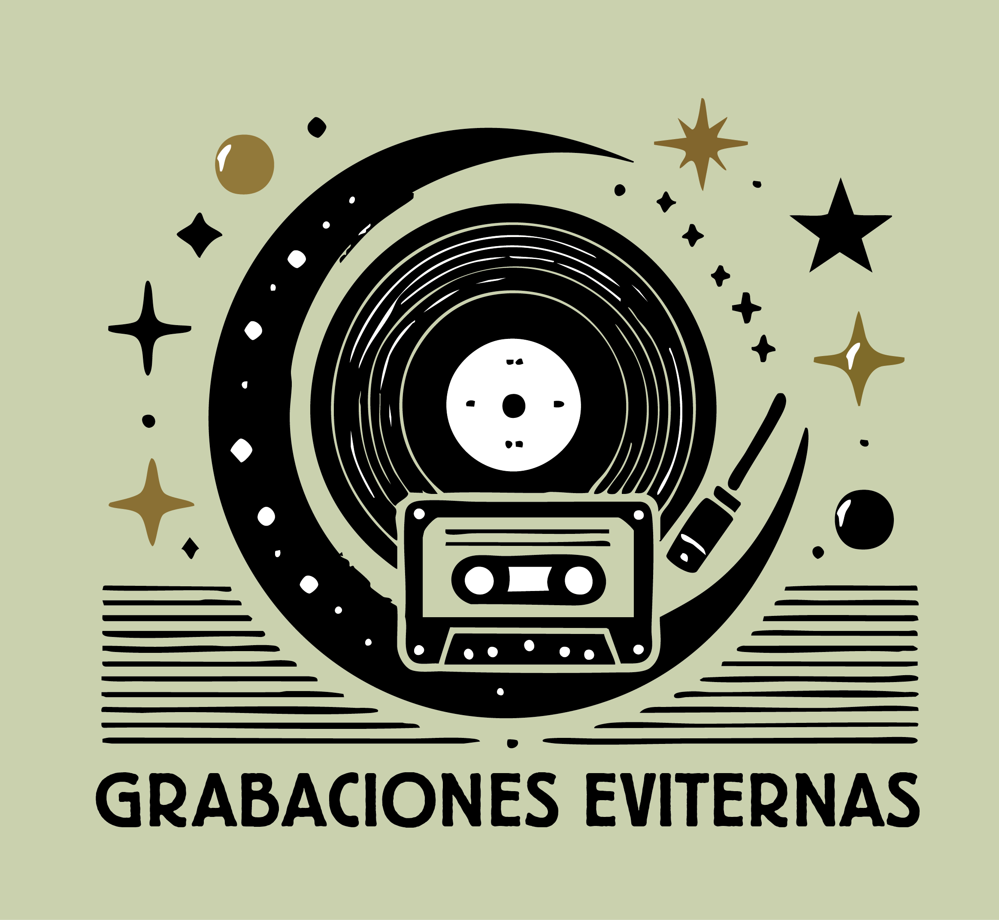

🎨 Logo SVG Animado — Versión de Código
✨ Animaciones activadas
Comparación
Logo original (JPG):

✨ Ventajas del SVG:
- 📐 Escala infinitamente sin perder calidad
- 💾 Archivo más ligero (reduce tiempo de carga)
- 🎨 Se puede animar con CSS/JavaScript
- 🎯 Perfecto para retina/4K displays
- ♿ Mejor accesibilidad (texto seleccionable)